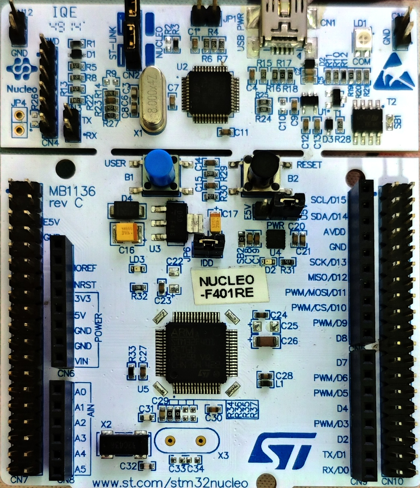
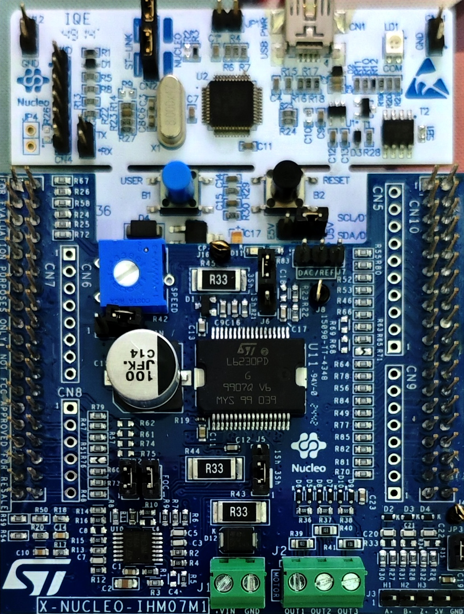
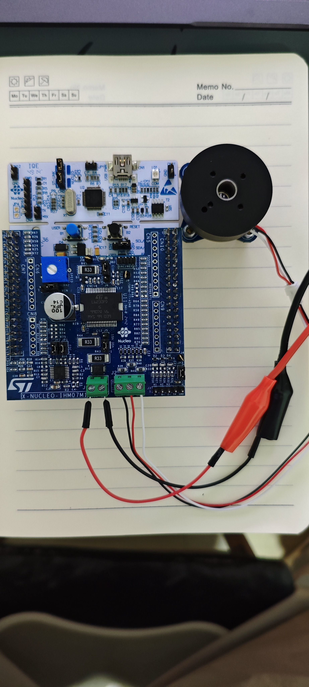

基于 mbed-os 仓库源码、ST 官方手册（UM1844/UM1943）及 MCSDK 工程代码整理
2026-08-13
STM32 微控制器的型号编码由多个字段拼接而成，每个字段对应一项产品属性 [$TRAE_REF](https://www.st.com/resource/en/reference_manual/dm00031020-stm32f401xb-e-and-stm32f401xc-e-advanced-arm-based-32-bit-mcus-stmicroelectronics.pdf)：
| 字段 | 含义 | 可选值（部分） |
|---|---|---|
| 产品系列 | 内核架构 | F=Cortex-M4F, L=低功耗M3, H=高性能M7, G=M4+, W=无线 |
| 子系列 | 功能定位 | 01=入门级, 03=USB FS, 05=低功耗, 07/09=高性能, 11=USB HS |
| 引脚数 | 封装引脚 | C=48, R=64, V=100, Z=144, I=176 |
| Flash 容量 | 片上闪存 | 8=64KB, B=128KB, C=256KB, E=512KB, G=1MB, I=2MB |
| 封装类型 | 物理封装 | T=LQFP, H=TFBGA, U=UFQFPN, Y=WLCSP |
| 温度范围 | 工作温度 | 6=-40~85°C, 7=-40~105°C, 3=-40~125°C |
STM32 Nucleo 开发板的型号格式为 NUCLEO-XXXXRY，其中 XXXX 直接对应板载 STM32 芯片型号的核心字段 [$TRAE_REF](https://www.st.com/resource/en/data_brief/nucleo-c031c6.pdf)：
因此 NUCLEO-F401RE 的含义为：搭载 STM32F401RE 芯片（Cortex-M4F, 64 引脚, 512KB Flash）的 Nucleo 开发板。
X-NUCLEO 扩展板的型号格式为 X-NUCLEO-IHMxxmZ [$TRAE_REF](https://www.st.com/resource/en/user_manual/dm00226187-getting-started-with-the-x-nucleo-ihm07m1-motor-driver-expansion-board-based-on-the-l6230-for-stm32-nucleo-stmicroelectronics.pdf)：
| 字段 | 含义 | 说明 |
|---|---|---|
| X-NUCLEO | 扩展板系列 | "X" 表示 eXpansion，可堆叠在 Nucleo 之上 |
| IHM | Industrial Motor | 电机驱动类扩展板（其他还有 IDS=显示, IDW=无线, IKA=传感器等） |
| 07 | 产品序号 | 区分不同驱动芯片方案（01=L6474步进, 02=L6470步进, 07=L6230三相BLDC, 13=STSPIN32F0等） |
| M | 连接器类型 | M=Morpho 连接器, A=Arduino 连接器 |
| 1 | 版本号 | 硬件修订版本 |
因此 X-NUCLEO-IHM07M1 的含义为：基于 L6230 的三相 BLDC 电机驱动扩展板，使用 Morpho 连接器，第 1 版 [$TRAE_REF](https://www.st.com/en/evaluation-tools/x-nucleo-ihm07m1.html)。
STM32F401RE 是 ST 基于 ARM Cortex-M4F 内核的入门级高性能微控制器，以下是关键规格（数据来源：mbed-os 仓库 CMSIS 头文件和 STM32 参考手册）[$TRAE_REF](https://www.st.com/resource/en/reference_manual/dm00031020-stm32f401xb-e-and-stm32f401xc-e-advanced-arm-based-32-bit-mcus-stmicroelectronics.pdf)：
| 参数 | 规格 | 备注 |
|---|---|---|
| 内核 | ARM Cortex-M4F (r0p1) | 带单精度 FPU 和 MPU |
| 主频 | 84 MHz | SYSCLK，APB1=42MHz, APB2=84MHz |
| Flash | 512 KB @ 0x08000000 | 8 扇区（16K×4 + 64K×1 + 128K×3） |
| SRAM | 96 KB @ 0x20000000 | <>单区连续 RAM|
| GPIO | 51 个可用引脚 | PA0-PA15, PB0-PB15, PC0-PC15, PD2, PH0-PH1 |
| ADC | 1× ADC1（12位，最高 2.4 MSPS） | 16 个外部通道 + 3 个内部通道 |
| 定时器 | TIM1(高级) + TIM2/3/4(通用) + TIM9/10/11(通用) | TIM1 支持 PWM 互补输出和刹车输入 |
| 通信接口 | USART1/2/6, SPI1/2/3, I2C1/2/3 | USART2 连接 ST-LINK 虚拟串口 |
| USB | USB OTG FS | PA9-PA12 |
| 封装 | LQFP-64 (10×10mm) | T 后缀 |
| 资源 | 引脚 | 说明 |
|---|---|---|
| LD2（绿色 LED） | PA5 | 用户可编程 LED，与 SPI1_SCK 复用 |
| B1（蓝色按键） | PC13 | 用户按键，可触发 EXTI 中断 |
| LD1（绿色 LED） | — | ST-LINK 通信指示灯 |
| ST-LINK/V2-1 | PA13(SWDIO), PA14(SWCLK) | 调试/编程接口，兼虚拟 COM 口 |
| USB 用户端口 | PA11(DM), PA12(DP) | 可作为 USB 设备端口（与 ST-LINK USB 独立） |
NUCLEO-F401RE 提供两套扩展连接器，可同时使用 [$TRAE_REF](https://files.amperoka.ru/datasheets/nucleo-usermanual.pdf)：
Arduino Uno R3 连接器（CN5/CN6/CN8/CN9）——兼容 Arduino Uno 生态的屏蔽板，引脚映射如下（来自 mbed-os PinNames.h）：
| Arduino 引脚 | STM32 引脚 | 功能 | Arduino 引脚 | STM32 引脚 | 功能 |
|---|---|---|---|---|---|
| A0 | PA0 | ADC1_IN0 | D0 | PA3 | USART2_RX |
| A1 | PA1 | ADC1_IN1 | D1 | PA2 | USART2_TX |
| A2 | PA4 | ADC1_IN4 | D2 | PA10 | GPIO |
| A3 | PB0 | ADC1_IN8 | D3 | PB3 | PWM(TIM2_CH2) |
| A4 | PC1 | ADC1_IN11 | D5 | PB4 | PWM(TIM3_CH1) |
| A5 | PC0 | ADC1_IN10 | D6 | PB10 | PWM(TIM2_CH3) |
| — | — | — | D9 | PC7 | GPIO |
| — | — | — | D10 | PB6 | SPI1_CS |
| — | — | — | D11 | PA7 | SPI1_MOSI |
| — | — | — | D12 | PA6 | SPI1_MISO |
| — | — | — | D13 | PA5 | SPI1_SCK / LED |
| — | — | — | D14 | PB9 | I2C1_SDA |
| — | — | — | D15 | PB8 | I2C1_SCL |
ST Morpho 连接器（CN7/CN10）——将 STM32 全部 64 引脚引出，是 X-NUCLEO 扩展板的主要连接方式。CN7 和 CN10 各为双排 2×19 = 38 pin，共 76 pin（含 VCC/GND 等电源引脚）。IHM07M1 即通过 Morpho 连接器与 Nucleo 叠加 [$TRAE_REF](https://www.st.com/resource/en/user_manual/dm00105828-stm32-nucleo64-boards-mb1136-stmicroelectronics.pdf)。
每个 Morpho 排针（CN7/CN10）为标准 2×19 双排排针，共 38 pin。引脚编号规则如下：
下表来自 UM1724 Table 29（适用于 NUCLEO-F401RE / F411RE / F446RE），列出 CN7 每个 pin 对应的 STM32F401RE 引脚 [$TRAE_REF](https://www.st.com/resource/en/user_manual/dm00105828-stm32-nucleo64-boards-mb1136-stmicroelectronics.pdf)：
| CN7（左侧 Morpho 排针） | |||||
|---|---|---|---|---|---|
| Pin | 信号名 | MCU 引脚 | 类型 | 功能 / 备注 | 本工程使用 |
| 1 | PC10 | PC10 | GPIO | — | ✓ M1_PWM_EN_U |
| 2 | PC11 | PC11 | GPIO | — | ✓ M1_PWM_EN_V |
| 3 | PC12 | PC12 | GPIO | — | ✓ M1_PWM_EN_W |
| 4 | PD2 | PD2 | GPIO | — | — |
| 5 | VDD | — | 电源 | 3.3V | — |
| 6 | E5V | — | 电源 | 外部 5V 输入（JP5 选 E5V 时使用） | ✓ IHM07M1 回供 |
| 7 | BOOT0 | — | 系统 | 启动模式选择，默认 LOW¹ | — |
| 8 | GND | — | 电源 | 地 | — |
| 9 | — | NC | — | 未连接 | — |
| 10 | — | NC | — | 未连接 | — |
| 11 | — | NC | — | 未连接 | — |
| 12 | IOREF | — | 电源 | I/O 电平参考（3.3V） | — |
| 13 | PA13 | PA13 | 调试 | SWDIO（与 ST-LINK 共享）³ | — |
| 14 | RESET | NRST | 系统 | 复位信号 | — |
| 15 | PA14 | PA14 | 调试 | SWCLK（与 ST-LINK 共享）³ | — |
| 16 | +3.3V | — | 电源 | 3.3V 输出 | — |
| 17 | PA15 | PA15 | GPIO | — | — |
| 18 | +5V | — | 电源 | 5V 输出 | — |
| 19 | GND | — | 电源 | 地 | — |
| 20 | GND | — | 电源 | 地 | — |
| 21 | PB7 | PB7 | GPIO | — | — |
| 22 | GND | — | 电源 | 地 | — |
| 23 | PC13 | PC13 | GPIO | — | ✓ Start_Stop（用户按键） |
| 24 | VIN | — | 电源 | 外部电源输入（7-12V） | — |
| 25 | PC14 | PC14 | GPIO | OSC32_IN | — |
| 26 | — | NC | — | 未连接 | — |
| 27 | PC15 | PC15 | GPIO | OSC32_OUT | — |
| 28 | PA0 | PA0 | ADC | Arduino A0 | ✓ M1_CURR_AMPL_U |
| 29 | PH0 | PH0 | GPIO | OSC_IN（HSE 晶振） | — |
| 30 | PA1 | PA1 | ADC | Arduino A1 | ✓ M1_BUS_VOLTAGE |
| 31 | PH1 | PH1 | GPIO | OSC_OUT（HSE 晶振） | — |
| 32 | PA4 | PA4 | GPIO | Arduino A2 | — |
| 33 | VBAT | — | 电源 | RTC 电池供电 | — |
| 34 | PB0 | PB0 | ADC | Arduino A3 | — |
| 35 | PC2 | PC2 | ADC | — | ✓ M1_TEMPERATURE |
| 36 | PC1 / PB9 | PC1 或 PB9⁴ | ADC/I2C | Arduino A4（可切换 I2C1_SDA） | ✓ M1_CURR_AMPL_V |
| 37 | PC3 | PC3 | GPIO | — | — |
| 38 | PC0 / PB8 | PC0 或 PB8⁴ | ADC/I2C | Arduino A5（可切换 I2C1_SCL） | — |
| CN10（右侧 Morpho 排针） | |||||
|---|---|---|---|---|---|
| Pin | 信号名 | MCU 引脚 | 类型 | 功能 / 备注 | 本工程使用 |
| 1 | PC9 | PC9 | GPIO | — | — |
| 2 | PC8 | PC8 | GPIO | — | — |
| 3 | PB8 | PB8 | GPIO/I2C | I2C1_SCL / Arduino D15 | — |
| 4 | PC6 | PC6 | GPIO | — | — |
| 5 | PB9 | PB9 | GPIO/I2C | I2C1_SDA / Arduino D14 | — |
| 6 | PC5 | PC5 | GPIO | — | — |
| 7 | AVDD | — | 电源 | 模拟电源 | — |
| 8 | U5V | — | 电源 | ST-LINK USB 5V² | — |
| 9 | GND | — | 电源 | 地 | — |
| 10 | — | NC | — | 未连接 | — |
| 11 | PA5 | PA5 | SPI/ADC | SPI1_SCK / Arduino D13 / LED | — |
| 12 | PA12 | PA12 | USB | USB_DP | — |
| 13 | PA6 | PA6 | SPI/ADC | SPI1_MISO / Arduino D12 | — |
| 14 | PA11 | PA11 | USB | USB_DM | — |
| 15 | PA7 | PA7 | SPI/TIM | TIM1_CH1N / SPI1_MOSI / Arduino D11 | — |
| 16 | PB12 | PB12 | GPIO | — | — |
| 17 | PB6 | PB6 | TIM/SPI | TIM4_CH1 / SPI1_CS / Arduino D10 | — |
| 18 | — | NC | — | 未连接 | — |
| 19 | PC7 | PC7 | TIM | TIM3_CH2 / Arduino D9 | — |
| 20 | GND | — | 电源 | 地 | — |
| 21 | PA9 | PA9 | GPIO | Arduino D8 | — |
| 22 | PB2 | PB2 | GPIO | BOOT1 | — |
| 23 | PA8 | PA8 | TIM | Arduino D7 | ✓ M1_PWM_UH |
| 24 | PB1 | PB1 | ADC | — | ✓ M1_POTENTIOMETER |
| 25 | PB10 | PB10 | TIM | TIM2_CH3 / Arduino D6 | — |
| 26 | PB15 | PB15 | GPIO | — | — |
| 27 | PB4 | PB4 | TIM | TIM3_CH1 / Arduino D5 | — |
| 28 | PB14 | PB14 | GPIO | — | — |
| 29 | PB5 | PB5 | GPIO | Arduino D4 | — |
| 30 | PB13 | PB13 | GPIO | — | — |
| 31 | PB3 | PB3 | TIM | TIM2_CH2 / Arduino D3 | — |
| 32 | AGND | — | 电源 | 模拟地 | — |
| 33 | PA10 | PA10 | GPIO | Arduino D2 | — |
| 34 | PC4 | PC4 | GPIO | — | — |
| 35 | PA2 | PA2 | USART | USART2_TX / Arduino D1 | ✓ UART_TX |
| 36 | — | NC | — | 未连接 | — |
| 37 | PA3 | PA3 | USART | USART2_RX / Arduino D0 | ✓ UART_RX |
| 38 | — | NC | — | 未连接 | — |
M1_PWM_UH → PA8 在 CN10 pin 23、M1_CURR_AMPL_U → PA0 在 CN7 pin 28、M1_PWM_EN_U → PC10 在 CN7 pin 1。这意味着 IHM07M1 正是通过这些 Morpho 引脚与 Nucleo 通信，物理上两板叠加后排针一一对应。
除 Morpho 和 Arduino 连接器外，NUCLEO-F401RE 板载还有 4 个与 ST-LINK 调试相关的连接器，位于板卡上半部分（ST-LINK 区域）[$TRAE_REF](https://www.st.com/resource/en/user_manual/dm00105828-stm32-nucleo64-boards-mb1136-stmicroelectronics.pdf)：
| 连接器 | 类型 | 引脚数 | 功能 | 位置 |
|---|---|---|---|---|
| CN1 | Mini-B USB | 5 pin | ST-LINK USB 接口——供电、调试、虚拟串口（VCP）、大容量存储 | 板顶端中央 |
| CN2 | 跳线（2 个） | 2 × 1 pin | ST-LINK/Nucleo 选择器——ON：调试板上 MCU；OFF：通过 CN4 调试外部 MCU | ST-LINK 区域 |
| CN3 | 排针 | 2 pin | UART 接口——连接 ST-LINK VCP 的 TX/RX，用于将其他 USART 路由到虚拟串口 | ST-LINK 区域 |
| CN4 | SWD 排针 | 6 pin | SWD 调试接口——用于连接外部调试器或调试外部 STM32 | ST-LINK 区域 |
CN4（SWD 调试接口）引脚定义——来自 UM1724 Table 5：
| CN4（SWD 调试连接器，6 pin） | ||
|---|---|---|
| Pin | 信号名 | 功能 / 备注 |
| 1 | VDD_TARGET | 目标 MCU 的 VDD（由应用板提供） |
| 2 | SWCLK | SWD 时钟 |
| 3 | GND | 地 |
| 4 | SWDIO | SWD 数据输入/输出 |
| 5 | NRST | 目标 STM32 复位信号（SB12 控制是否连通） |
| 6 | SWO | 保留（SB15 控制是否连接到 PB3） |
以下来自 UM1724 Table 16（适用于 NUCLEO-F401RE / F411RE），列出每个 Arduino 连接器引脚对应的 STM32F401RE 引脚 [$TRAE_REF](https://www.st.com/resource/en/user_manual/dm00105828-stm32-nucleo64-boards-mb1136-stmicroelectronics.pdf)：
CN6（电源排针，8 pin）——位于板卡左下角，提供电源和复位信号：
| CN6（Arduino 电源连接器，8 pin） | |||
|---|---|---|---|
| Pin | 信号名 | STM32 引脚 | 功能 / 备注 |
| 1 | NC | — | 未连接 |
| 2 | IOREF | — | I/O 电平参考（3.3V） |
| 3 | RESET | NRST | 复位信号 |
| 4 | +3.3V | — | 3.3V 输入/输出 |
| 5 | +5V | — | 5V 输出 |
| 6 | GND | — | 地 |
| 7 | GND | — | 地 |
| 8 | VIN | — | 外部电源输入（7-12V） |
CN8（模拟排针，6 pin）——位于板卡左下角，CN6 上方，提供模拟输入：
| CN8（Arduino 模拟连接器，6 pin） | |||
|---|---|---|---|
| Pin | 信号名 | STM32 引脚 | 功能 / 备注 |
| 1 | A0 | PA0 | ADC1_IN0 ✓ M1_CURR_AMPL_U |
| 2 | A1 | PA1 | ADC1_IN1 ✓ M1_BUS_VOLTAGE |
| 3 | A2 | PA4 | ADC1_IN4 |
| 4 | A3 | PB0 | ADC1_IN8 |
| 5 | A4 | PC1 或 PB9¹ | ADC1_IN11（PC1）或 I2C1_SDA（PB9）✓ M1_CURR_AMPL_V |
| 6 | A5 | PC0 或 PB8¹ | ADC1_IN10（PC0）或 I2C1_SCL（PB8） |
CN5（数字排针，10 pin）——位于板卡右下角，提供 SPI 和 I2C 接口：
| CN5（Arduino 数字连接器，10 pin） | |||
|---|---|---|---|
| Pin | 信号名 | STM32 引脚 | 功能 / 备注 |
| 1 | D8 | PA9 | GPIO |
| 2 | D9 | PC7 | TIM3_CH2 |
| 3 | D10 | PB6 | TIM4_CH1 / SPI1_CS |
| 4 | D11 | PA7 | TIM1_CH1N / SPI1_MOSI |
| 5 | D12 | PA6 | SPI1_MISO |
| 6 | D13 | PA5 | SPI1_SCK / LED LD2 |
| 7 | GND | — | 地 |
| 8 | AREF | — | 模拟参考（AVDD） |
| 9 | D14 | PB9 | I2C1_SDA |
| 10 | D15 | PB8 | I2C1_SCL |
CN9（数字排针，8 pin）——位于板卡右下角，CN5 上方，提供 UART 和 PWM 接口：
| CN9（Arduino 数字连接器，8 pin） | |||
|---|---|---|---|
| Pin | 信号名 | STM32 引脚 | 功能 / 备注 |
| 1 | D0 | PA3 | USART2_RX ✓ UART_RX |
| 2 | D1 | PA2 | USART2_TX ✓ UART_TX |
| 3 | D2 | PA10 | GPIO |
| 4 | D3 | PB3 | TIM2_CH2（PWM） |
| 5 | D4 | PB5 | GPIO |
| 6 | D5 | PB4 | TIM3_CH1（PWM） |
| 7 | D6 | PB10 | TIM2_CH3（PWM） |
| 8 | D7 | PA8 | GPIO ✓ M1_PWM_UH |
X-NUCLEO-IHM07M1 板载连接器可分为三类：功率端子（J1/J2）、传感器/调试排针（J3/J7）和配置跳线（J5/J6/J9/JP1-3）。CN7/CN10 为 Morpho 排母，与 Nucleo 的 Morpho 排针一一对应，是两板通信的物理通道 [$TRAE_REF](https://www.st.com/resource/en/user_manual/dm00105828-stm32-nucleo64-boards-mb1136-stmicroelectronics.pdf)。
| X-NUCLEO-IHM07M1 连接器总览 | ||||
|---|---|---|---|---|
| 连接器 | 类型 | 引脚数 | 功能 | 默认状态 |
| J1 | 接线端子（3.81mm） | 2 pin | 电机电源输入（8-48V DC） | — |
| J2 | 接线端子（3.81mm） | 3 pin | 三相电机连接（OUT1/OUT2/OUT3） | — |
| J3 | 排针（2.54mm） | 5 pin | Hall/Encoder 传感器接口（A+/B+/Z+/5V/GND） | — |
| J5 | 排针跳线（2.54mm） | 3 pin | 单/三分流电阻配置 | 2-3 CLOSED（单分流） |
| J6 | 排针跳线（2.54mm） | 3 pin | 单/三分流电阻配置 | 2-3 CLOSED（单分流） |
| J7 | 排针（2.54mm） | 3 pin | DAC 调试接口 | OPEN |
| J9 | 跳线（2.54mm） | 2 pin | 选择是否由 IHM07M1 向 Nucleo 供电 | OPEN（默认不供电） |
| JP1 | 跳线（2.54mm） | 2 pin | 电流检测电路 BIAS 上拉 | OPEN |
| JP2 | 跳线（2.54mm） | 2 pin | 电流检测电路运放增益调整 | OPEN |
| JP3 | 跳线（2.54mm） | 2 pin | Hall/Encoder 检测电路上拉使能 | CLOSED |
| CN7 | Morpho 排母 | 2×19 = 38 pin | 与 Nucleo CN7 对接（左排） | — |
| CN10 | Morpho 排母 | 2×19 = 38 pin | 与 Nucleo CN10 对接（右排） | — |
| CN5/CN6/ CN8/CN9 | Arduino 排母 | — | Arduino Uno R3 兼容（未焊接） | 未安装（N.M.） |
| J1（电源输入端子，2 pin，3.81mm 螺钉端子） | |||
|---|---|---|---|
| Pin | 信号 | 说明 | 范围 |
| 1 | VIN+ | 电机电源正极 | 8-48V DC |
| 2 | GND | 电机电源地 | — |
| J2（三相电机端子，3 pin，3.81mm 螺钉端子） | |||
|---|---|---|---|
| Pin | 信号 | L6230 输出 | 对应相 |
| 1 | OUT3 | L6230 OUT3 | W 相 |
| 2 | OUT2 | L6230 OUT2 | V 相 |
| 3 | OUT1 | L6230 OUT1 | U 相 |
| J3（Hall/Encoder 传感器，5 pin，2.54mm 排针） | |||
|---|---|---|---|
| Pin | 信号 | 功能 | 走向 |
| 1 | A+ / H1 | 编码器 A 相 / Hall 传感器 H1 | → Nucleo CN7 pin 17 (PA15) |
| 2 | B+ / H2 | 编码器 B 相 / Hall 传感器 H2 | → Nucleo CN10 pin 31 (PB3) |
| 3 | Z+ / H3 | 编码器 Z 相 / Hall 传感器 H3 | → Nucleo CN10 pin 25 (PB10) |
| 4 | 5V | 传感器电源（5V） | ← Nucleo +5V |
| 5 | GND | 传感器地 | ← GND |
下表来自 UM1943 Table 3，列出 IHM07M1 侧 CN7 排母每个 pin 的信号定义，并交叉对照 NUCLEO-F401RE 侧的 MCU 引脚 [$TRAE_REF](https://www.st.com/resource/en/user_manual/dm00105828-stm32-nucleo64-boards-mb1136-stmicroelectronics.pdf)：
| CN7（IHM07M1 侧 Morpho 排母） | |||||
|---|---|---|---|---|---|
| Pin | IHM07M1 信号 | 焊桥/电阻 | Nucleo MCU 引脚 | main.h 定义 | 功能说明 |
| 1 | Enable_CH1-L6230 | R58 | PC10 | ✓ M1_PWM_EN_U | L6230 使能 CH1（U 相） |
| 2 | Enable_CH2-L6230 | R67 | PC11 | ✓ M1_PWM_EN_V | L6230 使能 CH2（V 相） |
| 3 | Enable_CH3-L6230 | R72 | PC12 | ✓ M1_PWM_EN_W | L6230 使能 CH3（W 相） |
| 4 | — | — | PD2 | — | 未使用 |
| 5-16 | — | — | 电源/调试/NC | — | 电源和 SWD 引脚，IHM07M1 未连接信号 |
| 17 | Encoder A / Hall H1 | R79 | PA15 | — | 编码器 A / Hall H1 输入 |
| 18 | Encoder/Hall PS voltage | — | +5V | — | 向传感器供电（5V） |
| 19-22 | — | — | GND/电源 | — | 电源和地 |
| 23 | Blue button | — | PC13 | ✓ Start_Stop | Nucleo 用户按键（启停电机） |
| 24 | J9 | — | VIN | — | J9 跳线通路（向 Nucleo 供电） |
| 25-27 | — | — | 晶振/NC | — | 未使用 |
| 28 | Curr_fdbk_PhA | R47 | PA0 | ✓ M1_CURR_AMPL_U | U 相电流反馈（ADC） |
| 29 | — | — | PH0 | — | HSE 晶振，未使用 |
| 30 | VBUS_sensing | R51 | PA1 | ✓ M1_BUS_VOLTAGE | 母线电压检测（ADC） |
| 31 | — | — | PH1 | — | HSE 晶振，未使用 |
| 32 | DAC_Ch | R76 (N.M.) | PA4 | — | DAC 调试通道（未安装电阻） |
| 33 | — | — | VBAT | — | 电池供电，未使用 |
| 34 | BEMF2_sensing | R60 | PB0 | — | V 相反电动势检测（六步换相用） |
| 35 | Temperature feedback | R54 | PC2 | ✓ M1_TEMPERATURE | 温度反馈（NTC 热敏电阻） |
| 36 | Curr_fdbk_PhB | R48 | PC1 / PB9 | ✓ M1_CURR_AMPL_V | V 相电流反馈（ADC） |
| 37 | BEMF1_sensing | R59 | PC3 | — | U 相反电动势检测（六步换相用） |
| 38 | Curr_fdbk_PhC | R50 | PC0 / PB8 | — | W 相电流反馈（ADC） |
| CN10（IHM07M1 侧 Morpho 排母） | |||||
|---|---|---|---|---|---|
| Pin | IHM07M1 信号 | 焊桥/电阻 | Nucleo MCU 引脚 | main.h 定义 | 功能说明 |
| 1-6 | — | — | GPIO/电源 | — | 未使用 |
| 7-10 | — | — | AVDD/U5V/GND/NC | — | 电源和地 |
| 11 | GPIO/DAC/PWM | R80 | PA5 | — | 通用 GPIO/DAC/PWM（可配置） |
| 12 | CPOUT | R52 | PA12 | — | L6230 电荷泵输出监测 |
| 13 | DIAG/ENABLE/BKIN1 | R53 | PA11 | — | L6230 诊断/使能/刹车输入 1 |
| 14 | DIAG/ENABLE/BKIN2 | R46 | PB12 | — | L6230 诊断/使能/刹车输入 2 |
| 15 | BEMF3_sensing | R63 | PA7 | — | W 相反电动势检测（六步换相用） |
| 16-20 | — | — | GPIO/GND | — | 未使用 |
| 21 | VH_PWM | R64 | PA9 | ✓ M1_PWM_VH | V 相高侧 PWM |
| 22 | LED RED | R83 | PB2 | — | 红色 LED 指示（故障指示） |
| 23 | UH_PWM | R56 | PA8 | ✓ M1_PWM_UH | U 相高侧 PWM |
| 24 | POTENTIOMETER | R78 | PB1 | ✓ M1_POTENTIOMETER | 速度调节电位器（ADC） |
| 25 | Encoder Z / Hall H3 | R84 | PB10 | — | 编码器 Z / Hall H3 输入 |
| 26 | BEMF3_sensing | R66 | PB15 | — | W 相反电动势（另一路检测） |
| 27 | CURRENT REF | R77 | PB4 | — | 电流参考信号 |
| 28 | DIAG/ENABLE/BKIN1 | R49 | PB14 | — | L6230 诊断/使能/刹车输入 1（另一路） |
| 29 | GPIO/DAC/PWM | R85 | PB5 | — | 通用 GPIO/DAC/PWM（可配置） |
| 30 | GPIO/DAC/PWM | R82 | PB13 | — | 通用 GPIO/DAC/PWM（可配置） |
| 31 | Encoder B / Hall H2 | R81 | PB3 | — | 编码器 B / Hall H2 输入 |
| 32 | — | — | AGND | — | 模拟地 |
| 33 | WH_PWM | R70 | PA10 | ✓ M1_PWM_WH | W 相高侧 PWM |
| 34-38 | — | — | GPIO/NC | — | 未使用 |
NUCLEO-F401RE 支持多种供电方式，由跳线 JP5 选择 [$TRAE_REF](https://blog.digit-parts.com/pdf/Nucleo%20F401RE.pdf)：
| JP5 位置 | 供电来源 | 电压 | 适用场景 |
|---|---|---|---|
| U5V（默认） | ST-LINK USB | 5V → 板载 LDO → 3.3V | 仅调试/编程时 |
| E5V | 外部 5V（通过 Morpho Pin 5/6） | 5V → 板载 LDO → 3.3V | 扩展板供电时 |
| 3V3 | 外部 3.3V（通过 Morpho Pin 4） | 3.3V 直供 | 已有 3.3V 电源时 |
| VIN | 外部 7-12V（通过 Arduino VIN） | → 板载 LDO → 5V → 3.3V | 电池/适配器供电 |
L6230 是 ST 的 DMOS 三相无刷直流电机驱动器，集成了三个半桥功率级，专为 BLDC/PMSM 电机设计 [$TRAE_REF](https://www.st.com/en/motor-drivers/l6230.html)：
| 参数 | 规格 | 备注 |
|---|---|---|
| 工作电压 | 8V ~ 52V | 覆盖低压到中等电压电机 |
| 输出峰值电流 | 2.8A（1.4A RMS） | 适合小功率云台/ gimbal 电机 |
| RDS(on) | 0.73 Ω typ. @ 25°C | 单个 DMOS 导通电阻（上桥+下桥合计 ≈ 1.46 Ω） |
| PWM 频率 | 最高 100 kHz | 本工程使用 16 kHz |
| 封装 | PowerSO-36 | 功率增强型 SO 封装，底部裸焊盘散热 |
| 集成续流二极管 | 是（快速肖特基） | 无需外接续流二极管 |
| 过流保护 | 非耗散式（non-dissipative） | 通过外接 R-C 网络设定保护阈值 |
| 热保护 | 片上温度传感器 + 外部 NTC | NTC 贴近 L6230 封装 |
| 诊断输出 | DAC 诊断引脚 | 过流/过温事件输出模拟电压 |
| 内部比较器 | 1 路通用比较器 | 可用于 BEMF 零点检测 |
IHM07M1 采用三电阻分立采样（3-shunt）拓扑——在 L6230 的三个 SENS 引脚各串接一个检流电阻（R_sense），经运算放大器（TSV994）放大后送入 STM32 的 ADC。这种设计允许同时读取三相电流，FOC 算法从中选取任意两相计算（第三相由基尔霍夫电流定律推导）[$TRAE_REF](https://www.st.com/resource/en/user_manual/dm00226187-getting-started-with-the-x-nucleo-ihm07m1-motor-driver-expansion-board-based-on-the-l6230-for-stm32-nucleo-stmicroelectronics.pdf)。
IHM07M1 的模拟前端包括四个功能模块：
| 功能 | 信号名 | STM32 引脚 | 原理 |
|---|---|---|---|
| 三相电流采样 | Curr_fdbk_PhA/B/C | PA0 / PC1 / PC0 | 检流电阻 → 运放 TSV994 → ADC |
| 母线电压检测 | VBUS_sensing | PA1 | 电阻分压器（169k:1k 比例）→ ADC |
| 温度检测 | Temperature_feedback | PC2 | NTC 10k 热敏电阻（贴近 L6230）→ ADC |
| 反电动势检测 | BEMF2/3_sensing | PB12 / PB10 | 电阻分压 + L6230 内部比较器 → GPIO（六步换相用） |
L6230 提供两级保护 [$TRAE_REF](https://docs.rs-online.com/eb78/0900766b812fa84e.pdf)：
过流保护（OCP）——非耗散式，通过监测 SENS 引脚上的电压降实现。当电流超过阈值时，L6230 自动关断对应半桥的输出，同时通过 CPOUT/DIAG 引脚输出故障信号。保护阈值由外接 R-C 网络设定，无需额外的电流采样电路。
热保护（TSD）——芯片内部结温超过阈值（典型 150°C）时自动关断。外部 NTC 提供预警信号，STM32 可通过 ADC 读取温度值，在到达临界值前主动降低功率。
交叉导通保护——同一半桥的上下 DMOS 不会同时导通，内置死区时间逻辑。
以下引脚映射来自本工程 MCSDK 生成的 main.h，是实际使用的 IO 分配（非硬件理论可用范围）：
| 信号名称 | STM32 引脚 | 外设/功能 | 方向 | 用途说明 |
|---|---|---|---|---|
| M1_PWM_UH | PA8 | TIM1_CH1 | 输出 | U 相上桥 PWM |
| M1_PWM_VH | PA9 | TIM1_CH2 | 输出 | V 相上桥 PWM |
| M1_PWM_WH | PA10 | TIM1_CH3 | 输出 | W 相上桥 PWM |
| M1_PWM_EN_U | PC10 | GPIO | 输出 | U 相使能（L6230 EN1） |
| M1_PWM_EN_V | PC11 | GPIO | 输出 | V 相使能（L6230 EN2） |
| M1_PWM_EN_W | PC12 | GPIO | 输出 | W 相使能（L6230 EN3） |
| M1_CURR_AMPL_U | PA0 | ADC1_IN0 | 输入 | U 相电流采样 |
| M1_CURR_AMPL_V | PC1 | ADC1_IN11 | 输入 | V 相电流采样 |
| M1_CURR_AMPL_W | PC0 | ADC1_IN10 | 输入 | W 相电流采样 |
| M1_BUS_VOLTAGE | PA1 | ADC1_IN1 | 输入 | 母线电压检测 |
| M1_TEMPERATURE | PC2 | ADC1_IN12 | 输入 | L6230 温度检测 |
| M1_POTENTIOMETER | PB1 | ADC1_IN9 | 输入 | 电位器（速度给定） |
| Start_Stop | PC13 | EXTI15_10 | 输入 | 蓝色按键（启停控制） |
| UART_TX | PA2 | USART2_TX | 输出 | ST-LINK 虚拟串口 |
| UART_RX | PA3 | USART2_RX | 输入 | ST-LINK 虚拟串口 |
| M1_DP | PA6 | GPIO | 输出 | 调试点（示波器观测） |
| LED1 (LD2) | PA5 | GPIO | 输出 | 板载绿色 LED |
| SWDIO | PA13 | SWD | 双向 | 调试接口数据 |
| SWCLK | PA14 | SWD | 输入 | 调试接口时钟 |
| 端口 | 已用引脚 | 用途 | 剩余可用 |
|---|---|---|---|
| GPIOA | PA0, PA1, PA2, PA3, PA5, PA6, PA8, PA9, PA10, PA13, PA14 | ADC×2, UART×2, LED, Debug, PWM×3, SWD×2 | PA4, PA7, PA11, PA12, PA15（4个可用，PA11/12 为 USB） |
| GPIOB | PB1 | ADC（电位器） | PB0, PB2-PB15（14个可用） |
| GPIOC | PC0, PC1, PC2, PC10, PC11, PC12, PC13 | ADC×3, EN×3, 按键 | PC3-PC9, PC14, PC15（12个可用） |
| 其他 | PH0, PH1 | HSE 晶振（OSC_IN/OUT） | PD2 可用 |
IHM07M1 通过两组 Morpho 排母（CN7/CN10）直接插接在 NUCLEO-F401RE 的 Morpho 排针之上，形成两板叠加结构——NUCLEO-F401RE（控制板）在上，X-NUCLEO-IHM07M1（功率板）在下。电机通过导线连接到 IHM07M1 的 J2 三相端子台，不参与物理叠层 [$TRAE_REF](https://www.st.com/resource/en/user_manual/dm00226187-getting-started-with-the-x-nucleo-ihm07m1-motor-driver-expansion-board-based-on-the-l6230-for-stm32-nucleo-stmicroelectronics.pdf)：
以下三张实物照片分别展示了 NUCLEO-F401RE 单板、两板叠加系统以及接线完成后的完整系统。需特别说明：本系统为两板叠加结构（NUCLEO-F401RE + X-NUCLEO-IHM07M1），不存在第三层物理叠板——电机通过导线连接到 IHM07M1 的 J2 三相端子台，独立于板卡叠层之外。



| 资料名称 | 来源 | 用途 |
|---|---|---|
| UM1724 Rev 17 - STM32 Nucleo-64 boards User Manual | ST 官网 / 本地 PDF | Nucleo 板载资源、Morpho 排针引脚映射（Table 29）、电源架构、焊桥配置 |
| UM1943 Rev 4 - X-NUCLEO-IHM07M1 User Manual | ST 官网 / 本地 PDF | IHM07M1 Morpho 连接器引脚映射（Table 3）、跳线配置、BOM |
| UM2124 Rev 2 - Getting started with the Six-Step firmware library | ST 官网 / 本地 PDF | 六步换相固件库 API、调试方法、引脚映射参考 |
| L6230 Datasheet (Production Data) | ST 官网 | L6230 芯片规格、引脚定义、保护功能 |
| STM32F401 Reference Manual (RM0368) | ST 官网 | STM32F401 寄存器、外设描述 |
| mbed-os 6.17.0 - TARGET_NUCLEO_F401RE | 本地仓库 | PinNames.h 引脚定义、PeripheralPins.c 外设映射 |
| MCSDK v6.4.2 - main.h | 本工程 | 实际使用的 IO 引脚分配 |